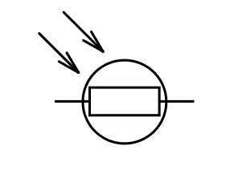
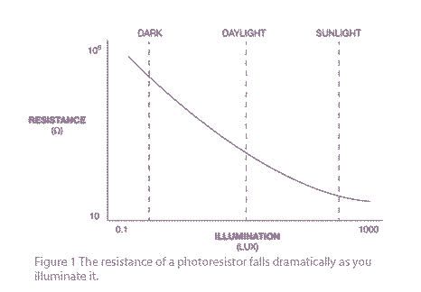
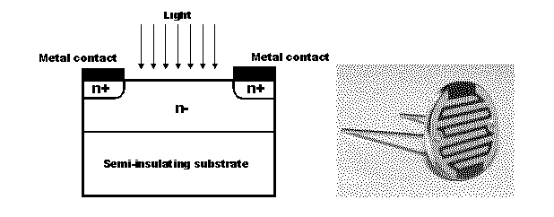

• Working Principle
• Characteristics
Construction of a Photocell
• Applications
What is a Light Dependent Resistor or a Photo Resistor?
A Light Dependent Resistor (LDR) or a photo resistor is a device whose resistivity is a function of the incident electromagnetic radiation. Hence, they are light sensitive devices. They are also called as photo conductors, photo conductive cells or simply photocells. They are made up of semiconductor materials having high resistance. There are many different symbols used to indicate a LDR, one of the most commonly used symbol is shown in the figure below. The arrow indicates light falling on it.

Working Principle of LDR
A light dependent resistor works on the principle of photo conductivity. Photo conductivity is an optical phenomenon in which the materials conductivity (Hence resistivity) reduces when light is absorbed by the material.
When light falls i.e. when the photons fall on the device, the electrons in the valence band of the semiconductor material are excited to the conduction band. These photons in the incident light should have energy greater than the band gap of the semiconductor material to make the electrons jump from the valence band to the conduction band. Hence when light having enough energy is incident on the device more & more electrons are excited to the conduction band which results in large number of charge carriers. The result of this process is more and more electric current starts flowing and hence it is said that the resistance of the device has decreased.This is the most common working principle of LDR
Characteristics of LDR
LDR’s are light dependent devices whose resistance decreases when light falls on them and increases in the dark. When a light dependent resistor is kept in dark, its resistance is very high. This resistance is called as dark resistance. It can be as high as 1012 Ω. And if the device is allowed to absorb light its resistance will decrease drastically. If a constant voltage is applied to it and intensity of light is increased the electric current starts increasing. Figure below shows resistance vs. illumination curve for a particular LDR.

Photocells or LDR’s are non linear devices. There sensitivity varies with the wavelength of light incident on them. Some photocells might not at all response to a certain range of wavelengths. Based on the material used different cells have different spectral response curves.
When light is incident on a photocell it usually takes about 8 to 12ms for the change in resistance to take place, while it takes seconds for the resistance to rise back again to its initial value after removal of light. This phenomenon is called as resistance recovery rate. This property is used in audio compressors.
Also, LDR’s are less sensitive than photo diodes and photo transistor. (A photo diode and a photocell (LDR) are not the same, a photo-diode is a p-n junction semiconductor device that converts light to electricity, whereas a photocell is a passive device, there is no p-n junction in this nor it “converts” light to electricity).
Types of Light Dependent Resistors:
Based on the materials used they are classified as:
i) Intrinsic photo resistors (Un doped semiconductor): These are pure semiconductor materials such as silicon or germanium. Electrons get excited from valance band to conduction band when photons of enough energy falls on it and number charge carriers increases.
ii) Extrinsic photo resistors: These are semiconductor materials doped with impurities which are called as dopants. Theses dopants create new energy bands above the valence band which are filled with electrons. Hence this reduces the band gap and less energy is required in exciting them. Extrinsic photo resistors are generally used for long wavelengths.
Construction of a Photocell
The structure of a light dependent resistor consists of a light sensitive material which is deposited on an insulating substrate such as ceramic. The material is deposited in zigzag pattern in order to obtain the desired resistance & power rating. This zigzag area separates the metal deposited areas into two regions. Then the ohmic contacts are made on the either sides of the area. The resistances of these contacts should be as less as possible to make sure that the resistance mainly changes due to the effect of light only. Materials normally used are cadmium sulphide, cadmium selenide, indium antimonide and cadmium sulphonide. The use of lead and cadmium is avoided as they are harmful to the environment.

Applications of LDR
LDR’s have low cost and simple structure. They are often used as light sensors. They are used when there is a need to detect absences or presences of light like in a camera light meter. Used in street lamps, alarm clock, burglar alarm circuits, light intensity meters, for counting the packages moving on a conveyor belt, etc.
 by
by